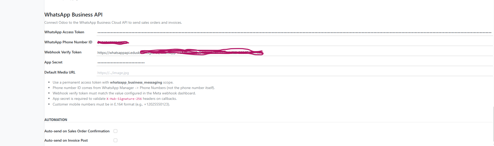

WhatsApp Cloud Messaging for Odoo 17
Send WhatsApp messages from Sales Orders and invoices, sync Meta templates, manage an inbox, and run controlled campaigns with delivery tracking.

Built for practical WhatsApp operations
A focused Odoo workflow for sales, accounting, customer communication, and compliant outreach.
Sales order messaging
Open a Sales Order, choose text, template, image, buttons, or list messages, and optionally attach the order PDF.
Invoice communication
Send posted invoice PDFs through WhatsApp and keep the message history connected to the customer record.
Two-way inbox
Receive inbound messages from the webhook, update opt-in preferences, and reply from an Odoo conversation view.
Template sync
Sync approved Meta templates by WABA ID and use variable previews to reduce sending mistakes.
Campaign queues
Create partner audiences, schedule drip steps, throttle sends, and retry failed queue lines safely.
Delivery visibility
Track sent, delivered, read, failed, and inbound statuses in logs and pivot-friendly reporting views.
Screenshots
Real Odoo screens included in the module package.

Dashboard and campaign health
Review campaign activity, status totals, and operational metrics in a familiar Odoo interface.
WhatsApp inbox
View customer conversation history, last message status, and reply directly from Odoo.


Campaign management
Run campaigns with queue control, scheduling windows, drip steps, and retry handling.

Template management
Maintain template status, variables, and compliance notes inside Odoo.

Message logs
Keep a complete audit trail for messages, statuses, payloads, and related documents.

Analytics
Measure delivery rates, read activity, failed sends, and campaign performance.
How the workflow fits together
Feature comparison
| Capability | Skillbridge WhatsApp Cloud | Basic connector |
|---|---|---|
| Official WhatsApp Cloud API | Yes | Often limited |
| Sales Order PDF sharing | Yes | Varies |
| Invoice PDF sharing | Yes | Varies |
| Inbound webhook processing | Yes | Limited |
| Template sync from Meta | Yes | Manual |
| Campaign queue and retries | Yes | No |
| Multi-company credentials | Yes | Usually no |
| Delivery/read/failure logs | Yes | Basic |
Setup overview
1. Configure Meta
Create a Meta app, WABA, phone number ID, access token, verify token, and app secret.
2. Add credentials
Set credentials in Odoo settings or create a default WhatsApp Account per company.
3. Sync templates
Import approved templates from Meta and review variables before sending.
4. Start messaging
Send from Sales Orders, invoices, inbox replies, or scheduled campaign batches.
Frequently asked questions
Does this use the official Meta API?
Yes. The module sends through Meta WhatsApp Cloud API using your own Meta credentials.
Does it support Odoo Community?
Yes. Core messaging, campaigns, inbox, and logs are designed for Odoo 17 installations with the listed dependencies.
Can I send media and PDFs?
Yes. The module supports image messages and PDF documents for sales orders and posted invoices.
Are Meta fees included?
No. Meta conversation fees and WhatsApp Business account charges are billed separately by Meta.
Need installation help?
Skillbridge Studio can help configure the Odoo module, Meta webhook, templates, and first test messages.
Contact SupportLicense: OPL-1. Requires your own Meta WhatsApp Business credentials.